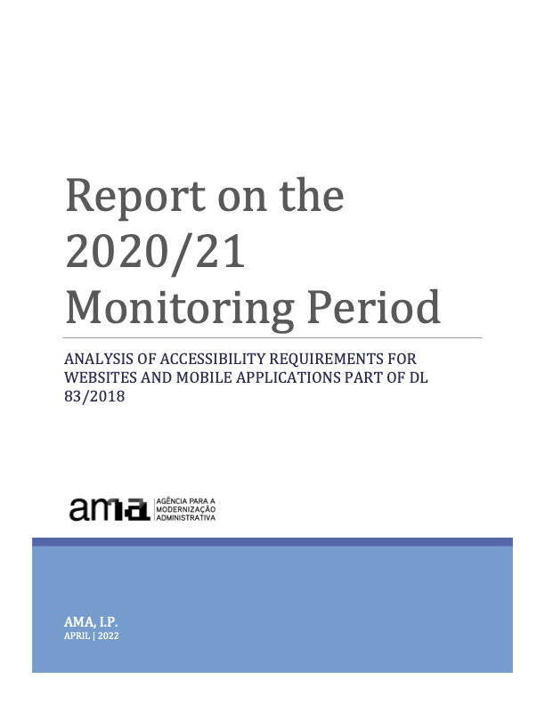

Você está aqui:
Se está à procura da versão portuguesa deste relatório consulte: Relatório de Monitorização do Período 2020/21: análise aos requisitos de acessibilidade dos sítios Web e das aplicações móveis parte do DL n.º 83/2018.
HTML version of the Report
-
AMA, I.P. & FCUL. (April 2022). Report on the 2020/21 Monitoring Period: analysis of accessibility requirements for websites and mobile applications part of DL 83/2018.. Lisbon: Unit of Digital Accessibility of the Administrative Modernisation Agency, Public Institute, and LASIGE, Computer Science and Engineering Research Centre of the Faculty of Sciences of the University of Lisbon (FCUL).
Measurement data collected
- Websites monitoring (simplified monitoring)
- Individual data collected for simplified monitoring (2k sample) in CSV format (zip, 56,5MB)
- Individual data collected for simplified monitoring (Home+ sample) in CSV format (zip, 5,4MB)
- Global metrics collected for simplified monitoring (2k sample) in JSON format (zip, 14KB)
- Global metrics collected for simplified monitoring (Home+ sample) in JSON format (zip, 14KB)
- Websites monitoring (in-depth monitoring)
- Mobile aplications monitoring
Executive Summary
Under Decree-Law No 83/2018 of 19 October 2018 setting out accessibility requirements for websites and mobile applications, Agência para a Modernização Administrativa, I.P. (AMA) is responsible for submitting a report to the European Commission every three years on the outcome of the monitoring carried out, including measurement data. This document contains the results and measurement data for the 1st monitoring period from 2020 to 2021.
To carry out the analysis of this first monitoring period, 281 websites and 16 mobile applications were selected in accordance with the methodology proposed by Implementing Decision (EU) 2018/1524. The websites have been subjected to two types of monitoring: simplified monitoring and in-depth monitoring. The first is essentially based on checking a sample of pages with an automatic validator. The second is a manual human validation by an accessibility expert. Mobile applications have only been subjected to in-depth monitoring.
The selection of the sample of websites considered the geographical criterion (central, regional, and local) but also the type of service, the demand for it and the sector of activity. Both the sample of websites and the sample of mobile applications were submitted for consideration to organisations representing persons with disabilities via the Inclusion Policy Commission coordinated by the Secretariat of State for the Inclusion of Persons with Disabilities.
Note: if you are unable to consult the following chart for any reason, see the data in Table 02.

Websites
Note: if you are unable to consult the following chart for any reason, see the data in Table 41.

For the simplified monitoring analysis, we used two sample compositions to submit to automatic validators: one with fewer pages and one with more pages. The first based on the method that AMA is using at the Portuguese Web Accessibility Observatory, which consists of a sample composed of the 1st page plus all pages belonging to the domain hyperlinked from the first page, which we have designated as Home+ (H+). The second, which we have designated 2K because it consists of a collection with several levels of depth up to a maximum of 2,000 pages. On average, Home+ produced samples with an average of 80 pages per website while 2K produced samples of 1000 pages on average per website.
In essence, we wanted to answer the question: is the Home+ sample representative enough or will we have to increase the number of pages we are using at the Observatory? When analysing Graph 02 which shows us the average non-compliance rates of the clauses of the European Standard that make up each accessibility principle, we find that the non-compliance rates for the 4 principles follow similar trends in both automatically analysed samples (i.e. H+ and 2K).
Another of the questions at the outset was related to the effect on the results caused by expert validation (in-depth monitoring). To what extent does in-depth monitoring corroborate or not the results of the two-analysis carried out exclusively with automatic validators (simplified monitoring)? From the analysis of the Graph 02 we realise that the principles with the best and worst compliance states in simplified monitoring are also the worst and the best in in-depth monitoring, but the scenario found by in-depth monitoring is, on average, 1 ½ times worse than that revealed by simplified monitoring. For the “Understandable” principle, in-depth monitoring even reveals a picture three times worse than the simplified monitoring. This reflects the importance of manual expert assessments. There is, however, one aspect on which the two evaluation methods agree. When observing the non-compliance rates for each of the 4 Web accessibility principles listed by the W3C, both methods point to the ‘Perceivable’ principle and the ‘Robust’ principle as having the highest non-compliance rates — in the range of 78% and 94% respectively. It is also worth noting that the scenarios found by the automatic and manual evaluations in these two principles are only 10% apart, which leads us to conclude the good work of automatic tools in detecting non-compliances in the principles of “Perceivable” and “Robust” accessibility.
In-depth monitoring is more effective in detecting compliance levels than simplified monitoring, but this analysis consumes more resources and time. For this reason, it is applied to a small number of pages. In this analysis, the simplified monitoring was carried out in a universe of 281,706 pages (sample 2K) and 19,931 (sample Home+). In-depth monitoring has been applied to a universe of 477 pages.
Mobile applications
The selection of mobile applications consisted of 8 applications that made up the top of the most used applications present in the catalogue https://www.app.gov.pt, in its iOS version and its Android version, making, in practice, a total of 16 applications — it is proven that the iOS version and Android version of the same application require, in terms of accessibility, two independent reviews. 144 screens were analysed, averaging 9 screens per application. The average rate of non-compliance was 51% for iOS applications and 53% for Android applications, thus not allowing it to be clearly said that the applications of one version are better than the others. In the “Robust” accessibility principle, the average rate of non-compliance per version is equal — i.e., 87.5%. iOS applications are best presented in the “Operable” and “Understandable” principles, but on the “Perceivable” principle, Android applications are slightly better than iOS applications.
Of the 4 principles of accessibility, those with the highest levels of non-compliance are “Perceivable” and “Robust”. “Perceivable” is very penalising, for example, of the visually impaired users (blind or low vision) and deaf people. On the other hand, “Robust” penalises all users who make use of technologies to transform information to their reading and navigation capabilities. These technologies include assistive technologies — screen readers with speech synthesiser or braille displays, used by blind people — but also, globally, any indexing, navigating or visualisation technology that needs to interoperate with information. The “Perceivable” principle appears with non-conformity rates in the order of 65%. The ‘Robust’ principle, on the other hand, appears with very high rates of non-compliance, in the order of 90%.
Note: if you are unable to consult the following chart for any reason, see the data in Table 42.

Sites and Apps
The 4 accessibility principles are affected in the same way on websites and mobile applications — the best match the best and the worst match the worst. However, mobile applications are always better than websites in all 4 principles — on average 10 percentage points higher than websites. The ‘Robust’ principle is presented with rates of non-compliance around 90%, followed by the ‘Perceivable’ principle with values around 70%. On the other hand, the ‘Understandable’ and ‘Operable’ principles show significantly lower non-compliance rates, respectively around 15% and 40% for applications and 30% and 50% for websites.
Note: if you are unable to consult the following chart for any reason, see the data in Table 43.

Users and main problems
Which users face the highest number of barriers? In European Standard EN 301 549 a relationship is made between the clauses representing the good accessibility practices to be applied and the users benefiting from these practices named as Functional Performance Statements. This more elaborate name relates to the fact that, by referring, for example, to ‘Usage without vision’, it is intended to refer not only to people with vision disabilities, but to all those who, in a given situation, are unable or limited in the use of vision — e.g. someone who, due to the intense sunlight of a summer day, is unable or have more difficulty to use a smartphone on the street.
Thus, the data collected (see Graph 05) tell us that this sample has non-conformities in the clauses that primarily affect:
- ‘Usage with limited vision’ (46% of non-conformities);
- ‘Usage without perception of colour’ (45%), and;
- ‘Usage without vision’ (41%).
‘Usage with limited manipulation and strength’, ‘Usage with limited cognitive capabilities’ and ‘Usage without hearing’ appear with non-compliance rates in average between 30% and 40%.
Note: if you are unable to consult the following chart for any reason, see the data in Table 44.

From the analysis carried out on websites and mobile applications, high rates of non-compliance in the ‘Perceivable’ and ‘Robust’ principles between 80% and almost 100% — 97% of non-compliance of the ‘Robust’ principle in the in-depth monitoring of websites have been detected regardless of sample size and regardless of the monitoring method used.
It is therefore not surprising that the 11 clauses with the highest failure rate of websites in in-depth monitoring were:
- 9.1.1.1 Non-text content, with a failure rate of 100% compared to applicable websites;
- 9.1.2.1 Audio only and video only (pre-recorded), with a failure rate of 100% compared to applicable websites;
- 9.1.2.2 Subtitles (pre-recorded), with a failure rate of 100% compared to applicable websites;
- 9.1.2.3 Audio description or alternative multimedia (pre-recorded) with a failure rate of 100% compared to applicable websites;
- 9.1.2.5 Audio description (pre-recorded), with a failure rate of 100% compared to applicable websites;
- 9.1.3.1 Information and relations, with a failure rate of 100% compared to applicable websites;
- 9.1.4.2 Audio control, with a failure rate of 100% compared to applicable websites;
- 9.4.1.1 Syntactic analysis (parsing), with a failure rate of 100 % compared to the applicable websites;
- 9.1.4.10 Re-align, with a failure rate of 96% compared to applicable websites;
- 9.2.4.4 Purpose of the hyperlink (in context), with a failure rate of 96% compared to the applicable websites; e
- 9.4.1.2 Name, function, value, with a failure rate of 96% compared to applicable websites.
From this group of 11 clauses, 8 are part of the ‘Perceivable’ principle, where usage depends on vision and hearing, 2 for the ‘Robust’ principle, where there is interoperability with assistive technologies and 1 for the ‘Operable’ principle, where is the manipulation of digital interfaces with alternative technologies to the mouse, such as the keyboard and all their emulators.
It is also interesting to analyse the distribution of the clauses of EN 301 549 by WCAG 2.1 levels ‘A’ and ‘AA’. Although the European Standard does not make this distinction, considering all clauses equally, distribution can facilitate those facing the task of correcting the problems encountered. W3C says that “A” level problems affect more people and that it’s a good starting point for the rectification work out there. So, we included in the executive summary (see graphic below) Graph 13 which shows us the ‘A’ level clauses that were analysed in the present study. See also Graph 14 for the ‘AA’ level clauses.
Note: if you are unable to consult the following chart for any reason, see the data in Table 32.

The graph above shows us a scenario where it is possible to verify the average non-compliance rates of accessibility clauses. The highest non-compliance rates occupy the leftmost positions in the bar chart, and it is immediately possible to perceive that non-compliance affects 30% to 40% of the total clauses. On the contrary, 60% to 70% of the clauses that can be seen, are clauses that comply or clauses that do not apply. This type of data shows more clearly what work needs to be done. The data collected by the AccessMonitor – the Web Accessibility validator used and developed by AMA – also left us a positive track by finding that 78% of the sites have an ‘AccessMonitor score’ greater than 5 (this on a scale from 0 to 10, where 10 represents good accessibility practices).
Similar results were observed in the 24 mobile applications. Problems with:
- 11.1.4.4 Resize text — 16 applications (100%)
- 11.1.3.4 Guidance — 15 applications (94%)
- 11.2.4.4 Purpose of the link (in context) — 14 applications (88%)
- 11.4.1.2 Name, function, value — 14 applications (88%)
- 11.1.3.1 Information and relations — 13 applications (81%)
Once again, we are talking about clauses that are behind the ‘Perceivable’ principle (3 clauses), ‘Robust’ (1) and ‘Operable’ (1).
Accessibility Statements
On the 281 websites analysed, accessibility statements were found in 13 websites, corresponding to 4.6% of the sample. However, 29 other websites were identified with an accessibility page, but which did not correspond to a statement built in accordance with the model proposed in Decree-Law No 83/2018. If the entities to which these websites belong to, correct their statements, we will soon have 15% websites with Accessibility Statements.
Contents of the report
- Executive Summary
- Websites
- Mobile applications
- Sites and Apps
- Users and main problems
- Accessibility Statements
- Part I — Description of monitoring activities
- General information
- Sample composition
- Sample of websites for the simplified monitoring method
- Sample of websites for the in-depth monitoring method
- Sample of mobile applications for the in-depth monitoring method
- Correlation with standards, technical specifications and tools used for monitoring
- Methodology applied in the simplified monitoring of websites
- Methodology applied for in-depth monitoring of websites
- Methodology applied for in-depth monitoring of mobile applications
- Part II — Results of monitoring
- Detailed results
- Simplified website monitoring
- Home+ Sample analysis
- Distribution of EN 301 549 clauses (H+)
- Distribution of functional performance statements (H+)
- Distribution of AccessMonitor tests and ACT rules per website (H+)
- Distribution of AccessMonitor tests and ACT rules per page (H+)
- AccessMonitor Score Distribution (H+)
- 2K Sample analysis
- Distribution of EN 301 549 clauses (2K)
- Distribution of EN 301 549 Functional Performance Statements (2K)
- Distribution of AccessMonitor tests and ACT rules per website (2K)
- Distribution of Accessmonitor tests and ACT rules per page (2K)
- AccessMonitor Score Distribution (2K)
- Analysis of the results of simplified website monitoring
- Home+ Sample analysis
- In-depth monitoring of websites
- Distribution of EN 301 549 clauses per website (in-depth)
- Distribution of EN 301 549 Functional Performance Statements (in-depth)
- Analysis of the results of in-depth monitoring of websites
- In-depth monitoring of mobile applications
- Mobile Applications Results by EN 301 549 Clauses
- Distribution of EN 301 549 Functional Performance Statements (Apps)
- Analysis of results of in-depth monitoring of mobile applications
- Simplified website monitoring
- Complementary content
- Usability tests’ results with participants with disabilities
- Websites’ testing
- Mobile Applications’ Testing
- Comparison of results of simplified and in-depth monitoring of websites
- Analysis of the accessibility performance of mobile applications by operating system
- Information about Accessibility Statements
- Content related to additional measures
- Usability tests’ results with participants with disabilities
- Detailed results
- Annexes
- Tables to support the Executive Summary
- List of websites’ sample to the simplified monitoring
- List of websites’ sample to the in-depth monitoring
- List of mobile apps’ sample to the in-depth monitoring
- List of WCAG tests 2.1 complementary to Trusted Tester methodology
- Do not restrict device orientation
- Identify Input Purpose
- Realign
- Contrast of active components
- Contrast of component states
- Contrast of graphic objects
- Text spacing
- Content on Hover or Focus
- Shortcuts
- Sharpeners and Movement
- Tags in Name
- Status Messages
Technical sheet
Title
Report on the 2020/21 monitoring period: analysis of accessibility requirements of websites and mobile applications part of the DL 83/2018
Year
2022
Editor
AMA, I.P. – Administrative Modernisation Agency, Public Institute
Direção de Digital Strategy & Governament Directorate / Digital Accessibility Unit
Production
A production of the Digital Accessibility Unit of the Administrative Modernisation Agency, Public Institute (EAD/AMA) and LASIGE, Computer Science and Engineering Research Centre of the Faculty of Sciences of the University of Lisbon (FCUL).

Partilhar